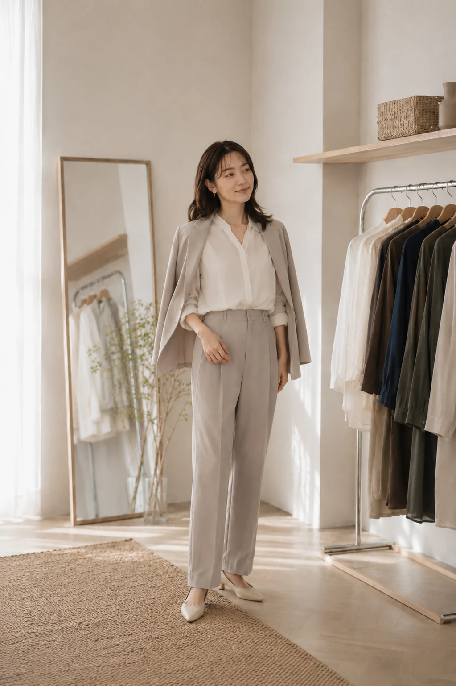
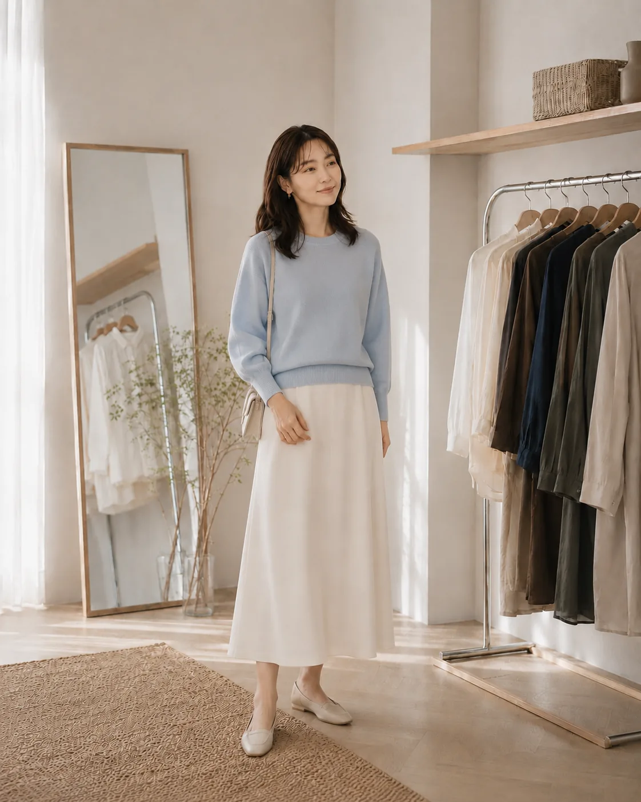

Case 01 / Office

User / 利用者 31歳 / 営業職
- Problem / 悩み
- 仕事服がいつも同じになり、ジャケットとパンツの組み合わせばかりになってしまう。
- Direction / 提案
- 手持ちのベーシックなパンツを活かしながら、トップスと羽織りの選び方を少し変える。
- Why / 理由
- 新しい服を増やさなくても、トップスの色や素材を変えるだけで、信頼感を残しながらやわらかな印象を作れます。
Personal Styling
好みも、仕事も、暮らしも。 今のあなたに合う服選びを一緒に整理して、 これから自分で選べる「服選びの軸」を見つけます。
初回スタイリング体験を予約するProblem
服はあるのに、着たい服がない。
買ったのに、結局あまり着ない服が増えている。
SNSで素敵と思っても、自分に似合うか分からない。
仕事の日も休日も、結局いつも似たような服になる。
診断を受けても、実際の服選びには活かしきれない。
Insight
SNSや雑誌を見たり、骨格診断やパーソナルカラーを調べたり。
情報は増えているのに、「結局、私の場合はどう選べばいい？」と迷ってしまうことがあります。
必要なのは、新しい正解を増やすことではなく、好みや仕事、暮らしに合わせて自分なりの選び方を整理することかもしれません。
Styling Check
5つの質問に答えると、今のあなたがどこで服選びに迷いやすいかを簡単にチェックできます。
Style Simulation
シーン、気分、普段選びたいボトムを選んでみてください。
同じ人でも、過ごし方や目指したい印象によってスタイリングの選択肢は変わります。

OFF × FRESH × SKIRT
Style Note
休日らしい自然な力の抜け方を残しながら、軽やかな色で新鮮さを加えたスカートスタイル。
Why This Style
休日の過ごしやすさを大切にしながら、明るい色とスカートのラインで軽やかな印象を作っています。
※このチェックは、服選びの傾向を整理するための簡易コンテンツです。
About yori
yoriでは、診断結果やスタイリストの感覚だけで服を決めることはありません。
「好き」と思えること。 仕事や休日に無理なく着られること。 手持ちの服とつながること。
好みも、似合うも、暮らしも一緒に整理しながら、これから自分で服を選ぶための「服選びの軸」を見つけていきます。
Like
好き・着たいと思えること
Fit
自分に自然になじむこと
Work
仕事で無理なく使えること
Life
休日や日常に取り入れやすいこと
Wardrobe
手持ちの服とつながること
What You Get
yoriで整理するのは、 その日のコーディネートだけではありません。
朝の服選びも、次の買い物も、 少しずつ自分で判断しやすくなることを 目指します。
「何を着よう」から始めるのではなく、自分の基準から選びやすくなります。
素敵だから買う、だけではなく、手持ち服や暮らしに合うかを考えて選べるようになります。
新しい服を増やす前に、今ある服の組み合わせや役割を見直せるようになります。
似合うかどうかだけではなく、自分が心地よく着られるかも判断の基準にできます。
Styling Examples
仕事の日も、休日も、 少し特別な予定の日も。
yoriでは、その人の暮らしや 手持ち服に合わせて、 無理なく続けられるスタイルを 一緒に考えます。

User / 利用者 31歳 / 営業職
User / 利用者 30歳 / 事務職
User / 利用者 32歳 / 企画職
First Styling
所要時間 約90分 初回スタイリング体験では、 好みや仕事、休日の過ごし方、 手持ち服などを一緒に見ながら、 これから自分で服を選ぶための軸を 整理していきます。
Step 01
服の悩みや好きなスタイル、仕事・休日の服装について事前に教えてください。
Step 02
「何が似合うか」だけではなく、どんな服なら普段の生活で無理なく着られるかを一緒に整理します。
Step 03
手持ち服やサンプルアイテムを見ながら、色・シルエット・組み合わせを試します。
Step 04
今後の買い物や朝の服選びで使える、自分なりの判断基準を整理します。
Step 05
体験後にも見返せる、あなたのための服選びメモをお渡しします。
Stylist
Maho Sakura
Personal Stylist
アパレル販売・スタイリング経験を経て、
現在はyoriで1対1のパーソナルスタイリングを担当。
「似合うかどうか」だけでなく、
その人自身が好きと思えること、
仕事や休日の中で無理なく着られることを大切にしています。
答えを押しつけるのではなく、
一緒に整理しながら、
その人自身が服を選びやすくなることを目指しています。
Voice
yoriを利用した方から届いたのは、 「何を着ればいいか」ではなく、 「自分で選べるようになった」 という声でした。
朝、服を選ぶ時間が短くなりました。
以前は何度も着替えてから出かけることが多かったのですが、 自分が選びやすい形や色が分かってから、 手持ち服の中でも迷いにくくなりました。
買う前に、一度考えられるようになりました。
以前は「素敵」と思ったらそのまま買っていましたが、 今は手持ち服と合わせられるか、 実際に着る場面があるかを考えてから選べています。
自分の「好き」が少し分かるようになりました。
似合うかどうかばかり気にしていましたが、 好きと思えることも大切にしていいと分かって、 服を選ぶのが前より少し楽しくなりました。
Price
初めての方には、 90分のFIRST STYLINGをご用意しています。
相談だけで終わるのではなく、 これから自分で選ぶための 「服選びの軸」まで一緒に整理します。
初めての方へ
First Styling
90min
¥6,600（税込）
Included
Other Menu
Personal Styling
120min
¥13,200（税込）
より詳しく手持ち服や着回しを整理したい方へ。
Shopping Support
120min
¥16,500（税込）
買い足すアイテムを、実際のショップで一緒に選びたい方へ。
Flow
初めての方でも安心して利用できるよう、 予約後の流れをシンプルにご案内します。
Step 01
LP内の予約フォームから、 希望日時・対面またはオンラインを選んでお申し込みください。
Step 02
服の悩みや好きなスタイル、 普段よく着る服などを事前に教えていただきます。
Step 03
ヒアリングとスタイリングを通して、 今の服選びを一緒に整理します。
Step 04
体験後にも見返せる、 あなたの服選びのポイントをまとめてお渡しします。
FAQ
はい。むしろ「何を選べばいいか分からない」と感じている方に利用していただきたいサービスです。
専門用語を前提にせず、一緒に整理しながら進めます。
必要ありません。
yoriでは商品の販売を行っておらず、特定ブランドの購入をお願いすることもありません。
予算や普段利用するブランドに合わせて提案します。
はい。初回スタイリング体験のみの利用でも問題ありません。
継続利用が必要な場合のみ、PERSONAL STYLINGやSHOPPING SUPPORTをご案内します。
大丈夫です。
手持ち服の量ではなく、今の暮らしや好みを整理することを大切にしています。
相談したい服がある場合は、対面なら数点持参していただけます。
はい。オンラインでもご利用いただけます。
手持ち服は事前に写真で共有していただき、画面越しにヒアリングと提案を行います。
特別な準備は必要ありません。
予約後にお送りする事前スタイルチェックへ回答いただくだけで大丈夫です。
相談したい手持ち服がある場合のみ、対面では持参、オンラインでは写真をご用意ください。
前日までの変更は可能です。
当日キャンセルについては料金が発生する場合があります。
詳しい条件は予約確定時にご案内します。
Ready to Choose
似合う服を教えてもらうだけではなく、
これから自分で選べるようになるために。
まずは初回スタイリング体験から、
今の服選びを一緒に整理してみましょう。
90min / ¥6,600（税込）・対面 / オンライン
初回スタイリング体験を予約するReservation
ご希望の日時と利用方法、
今のお悩みを教えてください。
Reservation Complete
このサイトは自主制作のため、実際の予約送信は行われません。
フォーム操作はここまでで完了です。